单细胞测序做到啥程度能毕业|博士篇
原文：https://mp.weixin.qq.com/s?__biz=MzAwMzIzOTk5OQ==&mid=2247494017&idx=1&sn=a2dc4e2eef2bcdb40f5074b665dfa45f&chksm=9b3c90d1ac4b19c79ac5128f96d27789241357c9745bb0389ff5f79f96ab825d3e1c9b29e3af#rd 合集：单细胞教程全收录
相较于单细胞测序本身而言，毕业 显然是各位更关注的问题，"单细胞测序做到啥程度能毕业"这个问题总是在我的脑海中挥之不去，此前我们已经整理了硕士篇的内容：单细胞测序做到什么程度能毕业|硕士篇。上次的推送大家互动地比较热烈，所以今天也应大家要求推出博士篇。首先，Biomamba目前博二，没博士毕业过，所以我说的也还是不算，回答这个问题的最好方法，就是去知网 翻一番各位博士的毕业论文 。另外，由于我精力有限，只翻了几篇文章，具有一定的偶然性 ，并且虽然我们的主题是单细胞测序，但事实上我们谈论的主要是单细胞转录组 测序(我此前所做的教程也是，其实还有很多的单细胞组学我们没有时间去介绍)，大家有更多的想法也欢迎在后台或交流群(永久免费的千人生信、科研交流群)中一起交流。如果想系统性的学习单细胞转录组测序数据分析也可以看这里：单细胞数据基础分析学习手册。
首先，我以“单细胞测序”为关键词在“博士学位论文”的范围内进行检索，由于毕业论文没有影响因子一说，我们挑了几篇博士论文中下载次数较高和时间较近的。
第一篇

这篇是来海军军医大学的名为“基于单细胞测序探究强直性脊柱炎炎症和骨化进程中巨噬细胞和干细胞的交互关系”的文章[1]，于2021 年5月答辩，下载次数1489 次[1]。该毕业论文全长113页，掐头去尾(去除目录、声明、致谢等内容)107页内容。这位博士的专业为外科学，应当是一位临床医师，看学号和致谢内容应当是16年入学18年转博、21年毕业，在学期间以第一作者或共同第一作者共发表了5篇SCI 、两篇中文论文，参与了两个基因项目，以第一发明人的身份注册了五项专利 。若其在五年时光的坐诊之余还独立完成了这些科研工作，我向其献上最真挚的敬意 。
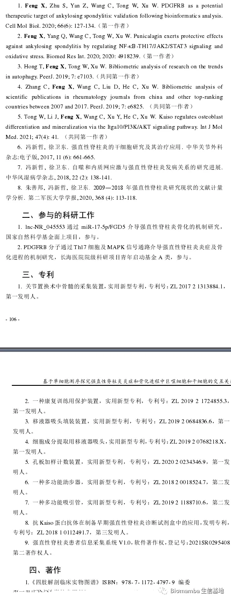
来了解一下具体内容，强制性脊柱炎(AS)的背景内容这里就不描述了，这里我依然只展示我关注的内容，感兴趣的同学可以读一下原文。首先作者收集了5例脊柱矫形的AS病人和三例脊柱骨折的健康对照者相同腰椎节段棘上韧带、棘间韧带和黄韧带附着点组织(好吧，临床样本 ，是我羡慕 的)，通过DB Rhapsody技术完成单细胞转录组测序。
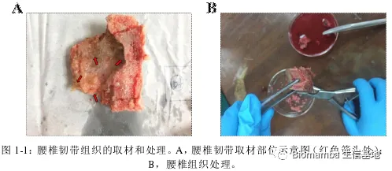
接下来就是比较常规的分群、找marker、注释、利用Marker的富集分析鉴定各细胞功能，鉴于作者总说自己用到的统计和分析软件为SPSS和Graphpad(即使在单细胞模块也是)，那可能单细胞这部分数据分析工作的完成另有其人。
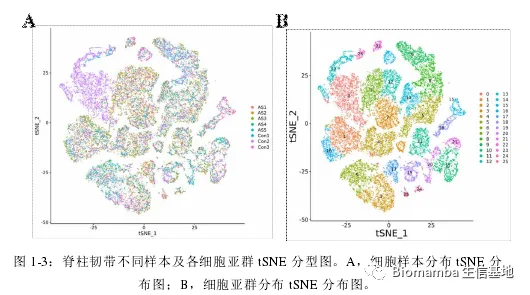
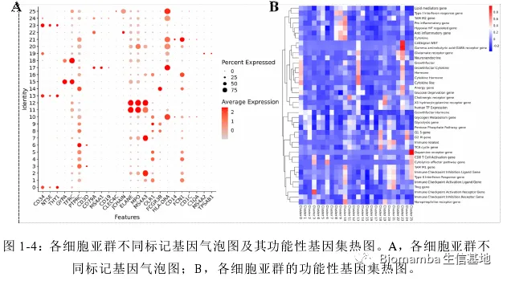
这里作者利用ssGSEA 对巨噬细胞进行了评分(单细胞基因集评分可以看这个教程：一文搞定单细胞基因集评分)，发现AS患者的M2评分更高一些，这其实与我以往的认知有所不同，我的知识体系里一般觉得M1型巨噬细胞起到促炎作用，会在炎症发生时占比上升。与此同时，AS的成骨相关基因集评分要高于正常人。
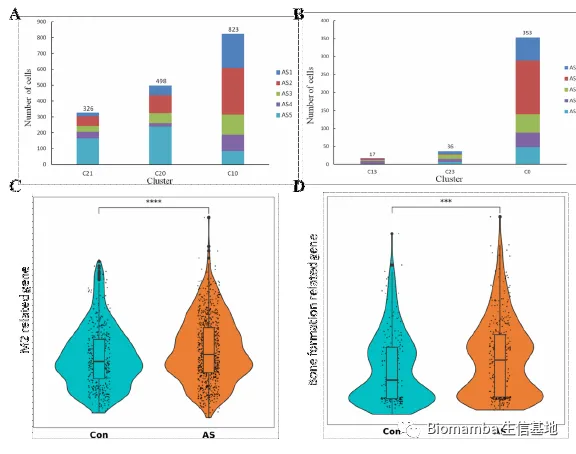
这时作者发现了一个特殊的亚群0，通过富集分析发现其可能通过成骨分化的形式与AS疾病发展相关，并且发现亚群10(M2型巨噬细胞)可以通过VEGFA配体与亚群0的NRP1、NRP2完成细胞通讯 过程。
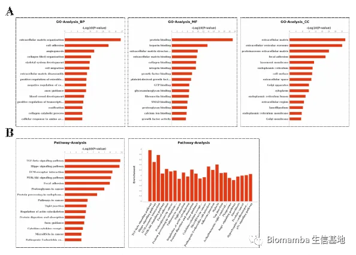
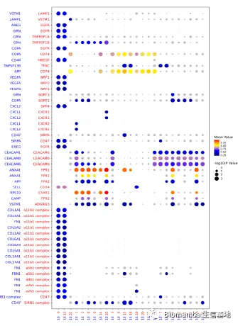
为了验证这一发现，作者收集了AS患者和正常人的血清、单核细胞和腰椎骨折病人的腰椎韧带组织，利用ELISA、WB、RT-qPCR和IHC技术对VEGFA进行了检测。可以看出VEGFA在AS患者当中明显升高，并且表达VEGFA的细胞从形态上来说也较接近巨噬细胞。
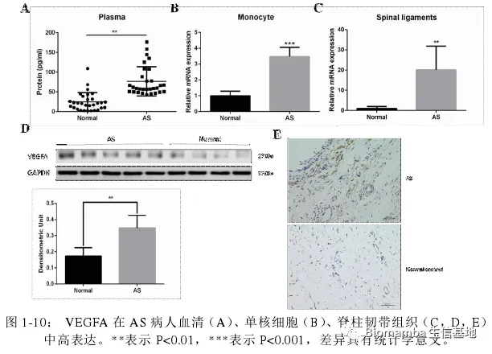
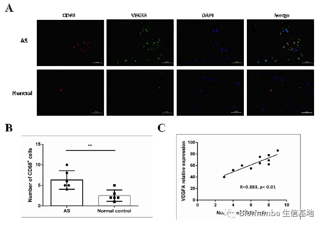
既然已经观察到了巨噬细胞与AS之间的伴随关系，接下来作者就涉及实验进一步的探讨了其中的机制。作者提取单核细胞诱导为M2细胞后添加TMF-α 诱导VEGFA的表达并与韧带组织中提取出的间充质干细胞共孵育，发现这种共孵育会导致间充质肝脏细胞的成骨分化能力上升。
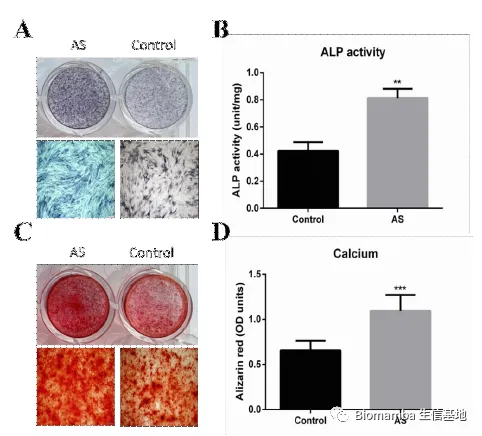
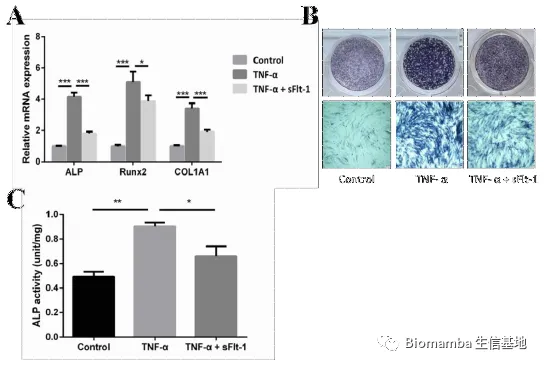
这种成骨能力也会随着VEGFA浓度的上升而上升：
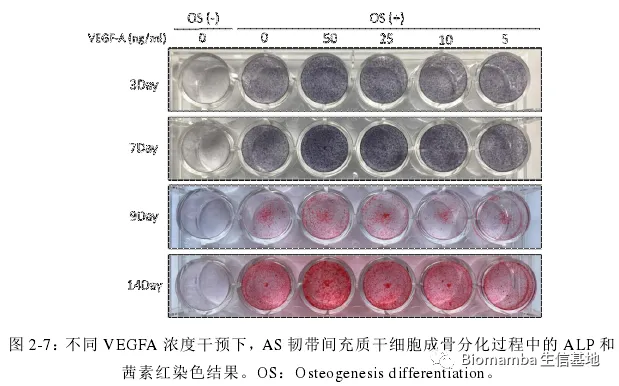
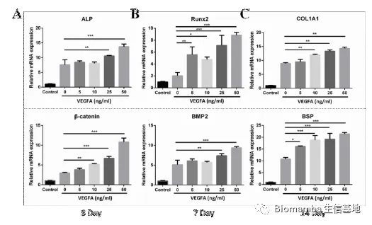
之后作者通过GO分析找到了0亚群中NRP关联基因及VEGF下游信号通路，并通过WB发现VEGFA介导的成骨细胞分化是由P-Akt通路所引起的：
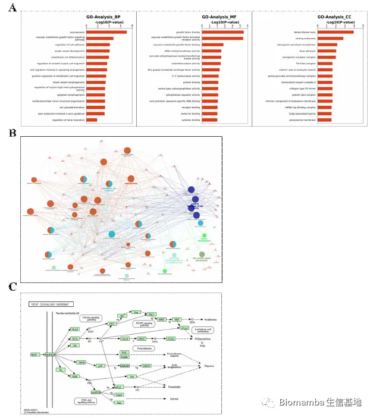
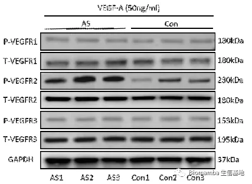
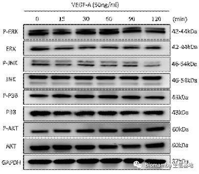
既然通路找到了，作者就开始动物实验试图从体内外验证VEGFA→VEGFR2→P-Akt对异位成骨的体内外验证。首先在体外，TNF-α的刺激能够促进AS向M2的形式分化，分泌VEGFA刺激韧带干细胞的成骨分化，但在通过siRNA 对VEGFA进行干扰后，巨噬细胞的促成骨能力明显下降。
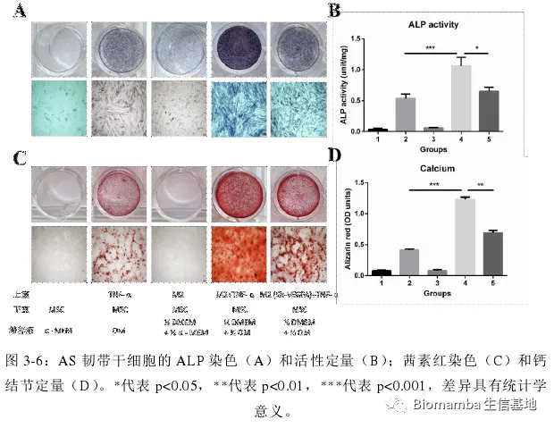
体内实验中，作者在蛋白聚糖诱导的AS小鼠动物模型中通过VEGFR2抑制剂(Ki8751)的使用能够缓解AS进展：
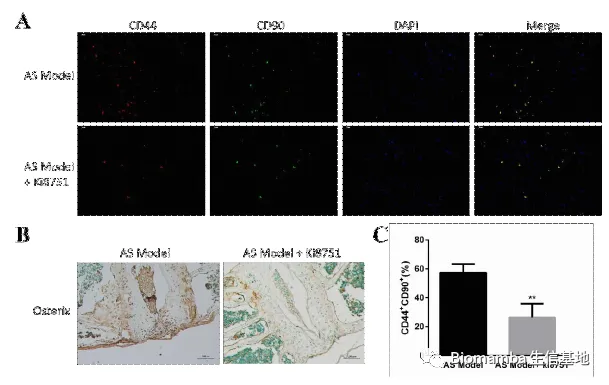
这个工作十分的完整，可谓是从表型、数据挖掘、机制寻找、体内外验证几个方面打通了这个课题。如果硬要挑骨头，就是拿SPSS分析GO富集的差异让人怀疑数据处理这部分是外包的，但论文完成方式 如何并不会影响这篇论文的完成度与价值 ！另外，这篇文章的数据模块占比并不高，单细胞测序只是一个引子。
第二篇
这篇是来北京协和医学院的名为“单细胞转录组解析食管癌发生多阶段过程中上皮及基质微环境动态变化”的文章，于2022 年5月答辩，算是最新的一批相关文章[2]。该毕业论文全长97 页，掐头去尾(去除目录、声明、致谢等内容)仅88 页内容。论篇幅还低于我们上次硕士篇中某些论文，但这篇学术论文的主要内容于2022年发表在《Cancer Research》上(IF=13)[3]。这位博士的专业肿瘤学(基础)，应当是19年博士入学，22年毕业(三年制 的博士，好吧，又是我羡慕 的)，在学期间以共同第一作者共发表了2篇SCI(另一篇为2020年的《Nature Communications》, IF=14.9)[4]、1篇中文论文。
来具体看一下内容，值得注意的是，这是一篇以数据分析为主的论文。食管鳞状细胞癌不是我们讨论的重点，不作介绍，作者在河南林州食管癌研究现场收集了14名患者食管多阶段病变组织标本，包括8例正常鳞状上皮、8例炎症上皮、6例低级别上皮内瘤变、9例高级别上皮内瘤变和14例食管鳞癌组织，进行了10X 单细胞转录组测序(这个数量的临床单细胞测序 ，价值真的很高)。
对于建库与数据处理这部分内容，作者描述的较为详细，看起来数据这部分内容是其自行完成(这可能也是这篇文章主要内容为数据分析的原因，确实需要花费大量时间)。作者首先通过病理切片观察了一些病理特征，之后通过Seurat进行初步数据分析并注释得到细胞类群，观察其中的上皮细胞、内皮细胞和成纤维细胞的比例，并通过流式细胞术 加以验证。
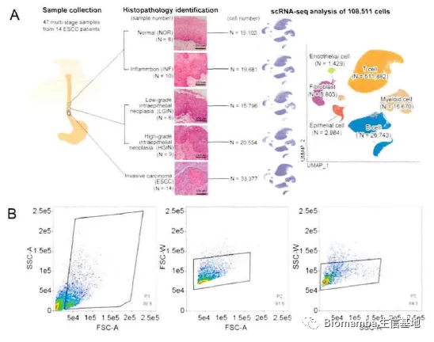
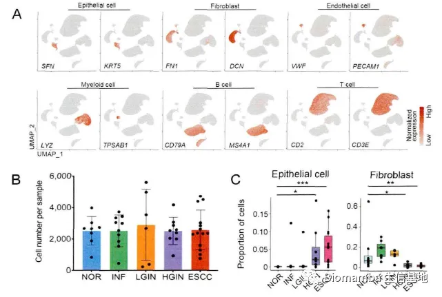
在作者课题组此前的研究中，发现有八个上皮细胞表达程序与正常上皮细胞演化为具有侵袭性恶性表型的癌细胞相关。通过单细胞的数据作者也重现了这一表达特征，并发现了这八个上皮细胞表达程序 的互斥性：
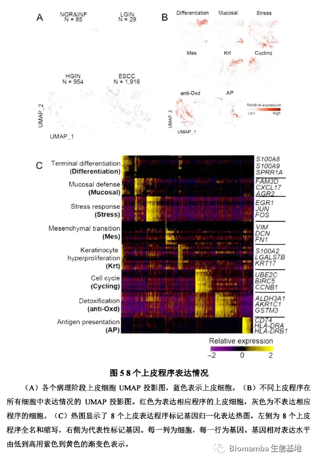
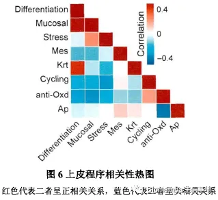
作者进一步对比了细胞增殖程序、细胞抗氧化程序、分化程序、黏膜免疫程序在各阶段中的表达情况，发现在HGIN阶段中这四个程序发生了明显改变，其中的一些基因也发生了梯度的变化：
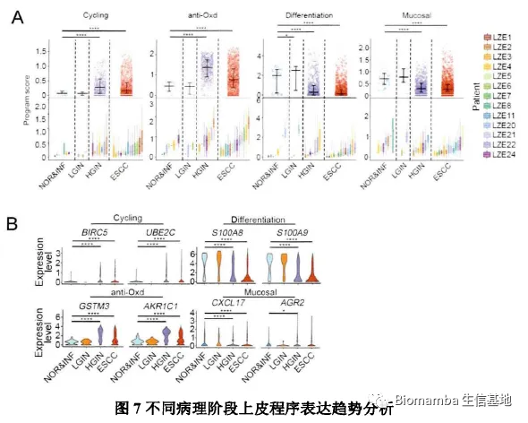
接下来作者通过轨迹推断(也就是拟时序分析 ，monocle2教程可以看这里单细胞测序数据进阶分析—《拟时序分析》3.monocle2实操：完整版)进一步描绘不同病理阶段上皮细胞的相互关联性，发现正常上皮细胞在向肿瘤细胞进化的过程中会逐渐出现两个独立的特征。
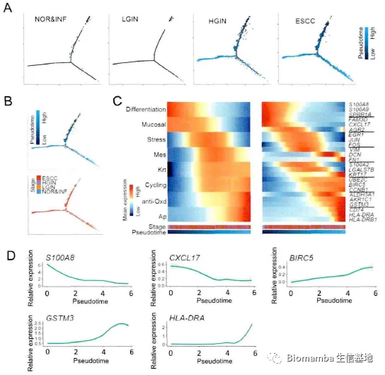
不仅是上皮细胞，作者将内皮细胞分为了两个亚群：肿瘤内皮细胞(TEC)和正常内皮细胞(NEC)，通过差异分析及火山图可视化发现肿瘤内皮细胞中上调的基因主要与细胞外基质重塑、血管生成、脉管系统生成、肿瘤侵袭、细胞粘附等过程相关(emm，也许这里少一个富集分析 ？)。
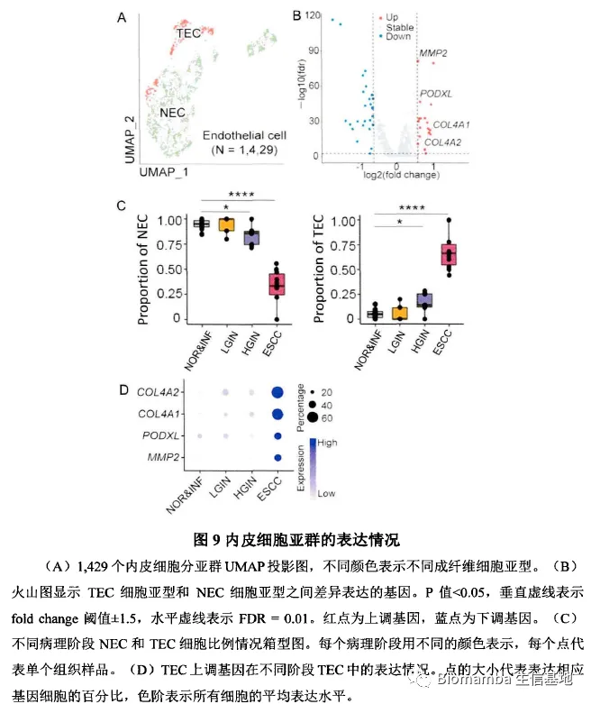
考虑到成纤维细胞的高度异质性 ，作者一共获得了四个类群(正常黏膜成纤维细胞,NMF；正常活化成纤维细胞,NAF； 癌相关成纤维细胞；血管平滑肌细胞, VSMC)。这些细胞具有各自的marker与特征通路：
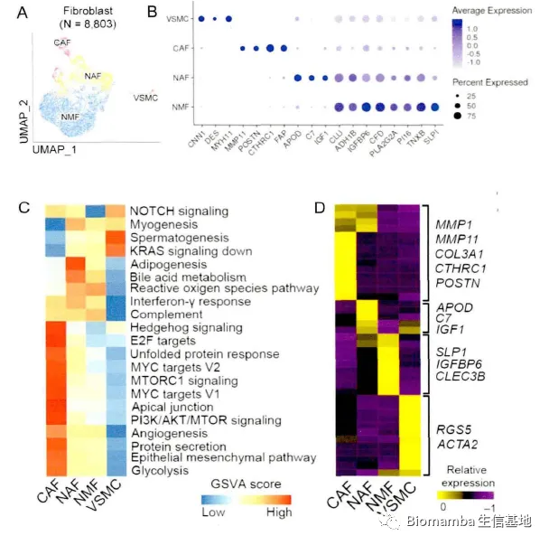
为了进一步探究这四种成纤维细胞亚群在癌发生过程中的潜在功能应用，作者进一步发现各个阶段不同成纤维细胞类型的比例也会有所不同。并且通过拟时序分析 发现这些具有不同功能的成纤维细胞可能存在相互转化。
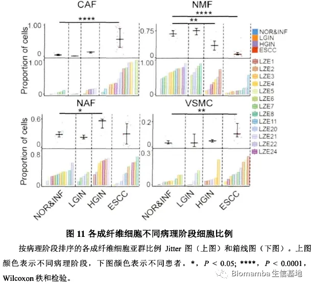
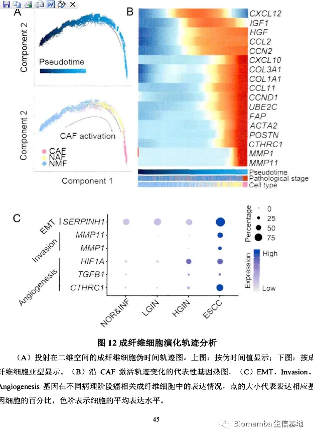
成纤维细胞异质性 很高，不同的细胞亚群可能对肿瘤具有不同的作用(促进或抑制)。因此作者通过细胞通讯试图揭示其与上皮细胞之间的相互做作用，以解析癌相关成纤维细胞在微环境中与肿瘤浸润性上皮细胞的促转移机制。通过CellphoneDB(为啥都喜欢用CellphoneDB，我还是觉得CellChat是yyds：单细胞测序数据进阶分析—《细胞通讯》2.2CellChat多组别分析)的计算，发现CAF细胞群与上皮细胞之前存在多对显著相互作用，可能通过CD74-MIF、EGFR-MIF、HLA-C-FAM3C发生相互作用从而促进细胞生长、细胞凋亡、细胞迁移、恶变细胞极性丢失等表型从而进一步调控肿瘤发生。
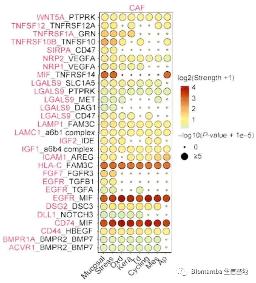
此后作者对其中一些关键通路、基因与NAF及CAF细胞比例展开了相关性分析并加以讨论，这篇文章的主体内容便结束了。
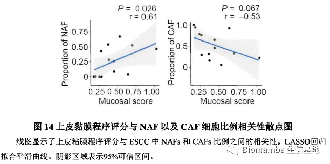
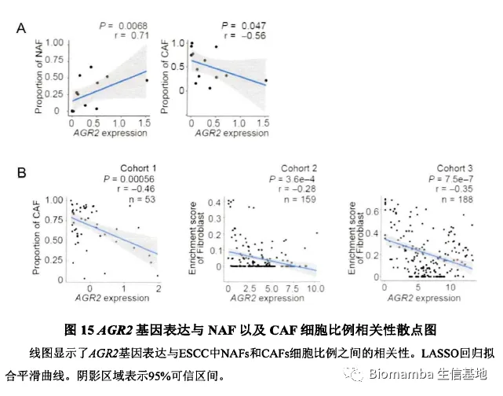
最后
除了这两篇之外我还读了一篇博士论文，该论文的篇幅也在一百页左右，主要内容是20只不同分组的模式动物的单细胞测序分析，并且没有实验验证内容(包含一些临床样本的免疫荧光验证)。最终该毕业论文的主题内容也是发在了一个IF=11.3 的期刊上。所以，没有必要再读下去了，这三篇文章以及上次的硕士篇，给我的感受就是：有好文章，不怕毕不了业 。
参考文献
[1]冯新哲. 基于单细胞测序探究强直性脊柱炎炎症和骨化进程中巨噬细胞和干细胞的交互关系[D].中国人民解放军海军军医大学,2021.[2]林霖. 单细胞转录组解析食管癌发生多阶段过程中上皮及基质微环境动态变化[D].北京协和医学院,2022.[3]Liu T, Zhao X, Lin Y, Luo Q, Zhang S, Xi Y, Chen Y, Lin L, Fan W, Yang J, Ma Y, Maity AK, Huang Y, Wang J, Chang J, Lin D, Teschendorff AE, Wu C. Computational Identification of Preneoplastic Cells Displaying High Stemness and Risk of Cancer Progression. Cancer Res. 2022 Jul 18;82(14):2520-2537.[4]Yao J, Cui Q, Fan W, Ma Y, Chen Y, Liu T, Zhang X, Xi Y, Wang C, Peng L, Luo Y, Lin A, Guo W, Lin L, Lin Y, Tan W, Lin D, Wu C, Wang J. Single-cell transcriptomic analysis in a mouse model deciphers cell transition states in the multistep development of esophageal cancer. Nat Commun. 2020 Jul 24;11(1):3715.

如何联系我们
 公众号后台消息更新不及时，超过48h便不允许回复读者消息，这里给大家留一下领取资料、免费服务器的微信号 ，方便各位随时交流、提建议（由助理接待）。此外呼声一直很高的交流群 也建好了，欢迎大家入群讨论：永久免费的千人生信、科研交流群
公众号后台消息更新不及时，超过48h便不允许回复读者消息，这里给大家留一下领取资料、免费服务器的微信号 ，方便各位随时交流、提建议（由助理接待）。此外呼声一直很高的交流群 也建好了，欢迎大家入群讨论：永久免费的千人生信、科研交流群
大家可以阅读完这几篇之后添加给生信入门初学者的小贴士 如何搜索公众号过往发布内容

 您点的每个赞和在看，我都认真当成了喜欢
您点的每个赞和在看，我都认真当成了喜欢